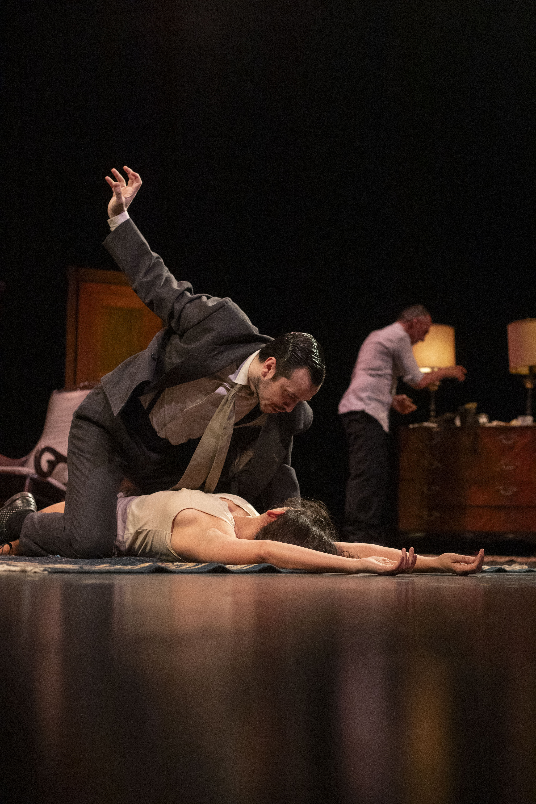

La obra
Un clásico del suspenso psicológico de Ira Levin, desarrollado para una experiencia de tensión sostenida y fuerte trabajo actoral.

Producciones / El Cuarto de Verónica
Ira Levin · Thriller psicológico
Una pieza de suspenso construida sobre identidad, manipulación y percepción. Su recorrido convirtió al proyecto en uno de los casos más representativos de la forma de producir de Hagamos Equipo: continuidad, precisión de puesta y capacidad de crecer temporada tras temporada.
Un clásico del suspenso psicológico de Ira Levin, desarrollado para una experiencia de tensión sostenida y fuerte trabajo actoral.
Una casa, una identidad puesta en duda y una serie de decisiones que alteran la percepción del espectador. La obra avanza como un juego de capas donde nada termina de ser exactamente lo que parece.
Autor: Ira Levin
Producción general: Hagamos Equipo
Dirección y puesta: equipo artístico de la producción
Elenco y equipo técnico: consultar dossier actualizado.
10 temporadas
cerca de 1.000 funciones
Argentina · Uruguay · proyección internacional
Recorrido
Estreno y primeras temporadas. La obra encuentra su público y consolida una identidad propia.
Nuevas funciones, reposiciones y crecimiento sostenido de audiencia.
La producción amplía su recorrido y llega a nuevas plazas y públicos.
La permanencia se convierte en parte de la narrativa del proyecto.
Un caso de continuidad que sintetiza la capacidad de producción del equipo.
En escena

La prensa
“Suspenso, precisión y una puesta que sostiene la atención hasta el final.”Archivo de prensa
“Una producción que encontró continuidad sin perder intensidad.”Prensa teatral
“El recorrido de la obra la convirtió en una referencia dentro de la línea de thrillers de la productora.”Hagamos Equipo